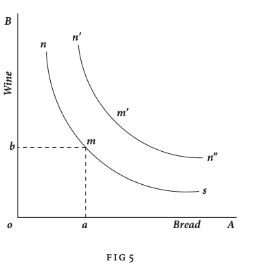
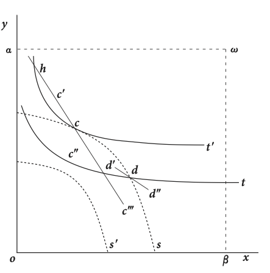

<!doctype html>
<html lang="en">

	<head>
		<meta charset="utf-8">

		<title>reveal.js - ClassHT 7</title>

		<link rel="stylesheet" href="plugin/reveal.css">
		<link rel="stylesheet" href="plugin/beige.css" id="theme">
        <link rel="stylesheet" href="plugin/monokai.css">
        <link rel="stylesheet" href="plugin/title-footer.css">
       
	</head>

	<body>

		<div class="reveal">

			<div class="slides">


                <!-- Slides are separated by three dashes (quick 'n dirty regular expression) -->
                <section data-markdown data-separator="\n---\n" data-separator-vertical="^\n--\n$">
                    <script type="text/template">
                        <!-- .slide: style="text-align: left;" -->
                        # History of Economic Analysis
                        ## PART II: Economics
                        ### Francesco Franco - Nova SBE 
                        ---

                       
                       
                        <!-- .slide: style="text-align: left;" -->

                        ### Francis Ysidro Edgeworth 1845-1926

                        <center></center>

                        ---

                        <!-- .slide: style="text-align: left;" -->

                        #### Measuring Utility

                        Mathematical Psychics - Hedinometry

                        > For **moral calculus a further dimension is required ; to compare the
                        happiness of one person with the happiness of another**, and generally the
                        happiness of groups of different members and different average
                        happiness. Such comparison can no longer be shirked, if there is, to be
                        any systematic morality at all. It is postulated by distributive
                        justice.

                        > Atoms of pleasure are not easy to distinguish and discern ; more
                        continuous than sand, more discrete than liquid; as it were nuclei of
                        the just-perceivable, embedded in circumambient semi-consciousness. We
                        cannot count the golden sands of life ; we cannot number the
                        innumerable smile of seas of love ; but **we seem to be capable of
                        observing that there a greater, there a less, multitude of
                        pleasure-units**, mass of happiness ; and that is enough.

                        Mathematical Psychics - Maximum Energy

                        > The application of mathematics to the world of soul is countenanced by
                        the hypothesis (agreeable to the general hypothesis that every psychical
                        phcnomenon is the concomitant, and in some sense the other side of a
                        physical phenomenon), the particular hypothesis adopted in these pages,
                        that Pleasure is the concomitant of Energy.

                        > "Mecanique Sociale" may one day take her place along with "Mecanique
                        Celeste," throned each upon the double-sided height of one maximum
                        principle, the supreme pinnacle of moral as of physical science.


                        Mathematical Psychics - Definitions


                        > **Axiom: Pleasure is measurable, and all pleasures are commensurable; so
                        much of one sort of pleasure felt by one sentient being equateahle to so
                        much of other sorts of pleasure felt by other sentients.**

                        ---

                        <!-- .slide: style="text-align: left;" -->

                        

                        Mathematical Psychics - Pure contract

                        > Let $x$ and $y$ be the portions interchanged, as in Professor Jevons's
                        example. Then the utility of one party, say $X$, may be written
                        $\Phi_{1}\left(a-x\right)+\Psi_{1}\left(y\right)$;and the utility of the
                        other party, say $\Phi_{2}\left(x\right)+\Psi_{2}\left(b-y\right)$;
                        where $\Psi$and $\Phi$ are the integrals of Professor Jevons's
                        symbols,$\phi$ and $\psi$. It is agreed that $x$ and $y$ shall be varied
                        only by consent (not e.g. by violence).

                        > More generally. Let $P$, the utility of $X$, one party, $=F(x,y)$ and
                        $\Pi$, the utility of $Y$ the other party, =$\Phi(x,y)$...

                        > It may be shown from a variety of points of view that the locus of the
                         required point is $$\frac{dP}{dx}\frac{d\Pi}{dy}-\frac{dP}{dy}\frac{d\Pi}{dx}=0$$ which
                         locus it is here proposed to call the **contract-curve**.

                        > ...For the **indifference-curve** is in general convex to the abscissa. For
                        its differential equation is
                        $$-\frac{dy}{dx}=\frac{\left(\frac{dF\left(x,y\right)}{dx}\right)}{\left(\frac{dF\left(x,y\right)}{dy}\right)}$$
                        ...

                        ---


                        <!-- .slide: style="text-align: left;" -->

                        

                        Mathematical Psychics - Utilitarian
                        

                        > PROBLEM.-To find ($\alpha$) the distribution of means and ($\beta$) of labour, the ($\gamma)$ quality and ($\delta$) number of population, so that there may be the greatest possible happiness.

                        Without presenting $\gamma$ and $\delta$  his formulation to solve for $\alpha$  and $\beta$  is to find the maximum of:

                        >  ...Let $V=\int_{x_0}^{x_1}{n[F(xy)-p-c\{y-f(xp)\}]dx}$
                        >
                        >  where where $x$ is degree of either capacity, or more elegantly,i f possible, a third variable in terms of which both capacities may be expressed ; $x_1$ and $x_0$ are the given limits of integration (the number and quality of the distributees being not in the present inquiry variable); $n$ is the number of each section; $F(x y)$ is a unit's pleasure of consumption being a function of $x$ his quality (capacity for pleasure) and the independent variable $y$ his means; $p$ is the unit's pain of work, another independent variable function ; $c$ is the constant incidental to problems of relative maximum; $f(xp)$ is the work done by the unit, being a function of his quality ( capacity for work) and fatigue (effort).

                        This is today welfare maximization adopting a utilitarian point o view.  	

                        
                        ---


                        <!-- .slide: style="text-align: left;" -->

                        ### Vilfredo Pareto 1848-1923

                        <center></center>

                        ---

                        <!-- .slide: style="text-align: left;" -->

                        #### Indifference Curves

                        Manual of Political Economy - The general concept of Economic
                        Equilibrium - chapter III

                        > **The indifference lines of tastes**. Let us consider a man who is guided by
                        his tastes alone, and who possesses one kilogram of bread and one
                        kilogram of wine. Depending on his tastes, he is disposed to have a
                        little less bread and a little more wine, or conversely. He agrees, for
                        example, to have only 0.9 kilograms of bread, provided he can have 1.2
                        kilograms of wine. In other words, this means that for him both these
                        combinations, namely, one kilogram of bread and one kilogram of wine,
                        0.9 kilograms of bread and 1.2 kilograms of wine are equivalent. He does
                        not prefer the second to the first, or the first to the second; he would
                        not know which to choose; **he is indifferent as to whether he enjoys the
                        one or the other of these combinations.**

                       
                        <center></center>


                        > ...The use of graphs will make it very much easier to follow the
                        argument. Let us draw two perpendicular axes, OA and OB; let us measure
                        the quantities of bread along enjoys the one or the other of these
                        combinations. Starting from the combination of one kilogram of bread and
                        one kilogram of wine, we OA and the quantities of wine along OB. For
                        example, Oa represents one unit of bread, and Ob one unit of wine; the
                        point m, defined by these coordinates, indicates the combination of
                        one kilogram of bread and one kilogram of wine.

                       

                        ---

                        <!-- .slide: style="text-align: left;" -->

                        #### Indifference Curves


                        Manual of Political Economy - The general concept of Economic
                        Equilibrium - chapter III

                        > We can in this way represent all the preceding series, and by joining
                        together the points of this series, we obtain the line $nms$, which may
                        be called the indifference line, or indifference curve. This expression
                        is due to Professor F.Y. Edgeworth. He assumed the existence of
                        utility(ophelimity) and deduced the indifference curves from it; I, on
                        the contrary, consider the indifference curves as a factual datum and
                        infer from them all that is necessary for the theory of equilibrium,
                        without resorting to ophelimity.

                        Manual of Political Economy - Tastes - chapter IV


                        > **Ophelimity, or its index, for one individual, and ophelimity, or its
                        index, for another individual, are heterogeneous quantities. They may
                        neither be added together**, nor compared: No bridge, as the English say. A
                        sum of ophelimities enjoyed by different individuals does not exist;
                        such an expression has no meaning.

                        Manual of Political Economy - Economic Equilibrium - chapter VI

                        > We shall start by defining a term which it is convenient to use in order
                        to avoid long-drawn-out sentences. **We shall say that the members of a
                        community enjoy, in a certain situation, maximum ophelimity when it is
                        impossible to move slightly away from this position.[in such a way that the ophelimity enjoyed by each member of the
                        community increases or decreases]. That is to say, every small displacement from
                        this position must necessarily have the e!ect of increasing the ophelimity enjoyed by
                        some individuals and decreasing that enjoyed by others, i.e., of being agreeable to some
                        and disagreeable to others.**

                        ---

                        <!-- .slide: style="text-align: left;" -->

                        #### Pareto Optimum

                        Manual of Political Economy - Economic Equilibrium - chapter VI

                        > This theorem can be rigorously proved only with the aid of mathematics
                        I shall restrict myself here to providing just a sketch [of the proof]. 
                        Let us start by considering an exchange
                        between two individuals. For the first, the
                        axes are $ox$ and $oy$, and for the second,
                        $\omega\alpha$ and $\omega\beta$‚ and they are positioned in
                        such a way that the paths followed by the
                        two individuals form a single line in [the] Figure.

                        <center></center>

                        > The indifference lines are $t,t',t''$, . . . , for the first individual and
                        $s,s',s''$, . . ., for the second. For the first
                        individual, the hill of pleasure rises from
                        $o$ toward $\omega$, and for the second it rises
                        instead from $\omega$  toward $o$.
                        For phenomena of type (I), we know
                        that the equilibrium point is to be found at
                        a point of tangency of the two individuals’
                        indifference curves. Let $c$ be one of these
                        points. If we move away from it along the
                        path $cc'$, we ascend the hill of pleasure of
                        the first individual and descend that of the second; and conversely if we follow the path
                        $cc''$. It is thus not possible tomove away from $c$ so as to benefit, or harm, both individuals
                        at the same time; but necessarily, if one of them benefits the other is harmed.


                        ---
                         <!-- .slide: style="text-align: left;" -->


                         ### Alfred Marshall 1842-1924

                         <center></center>
                         
                         
                        ---
 
                          <!-- .slide: style="text-align: left;" -->
                          
                         Principle of Economics - preface
 
                         > Some of the best work of the **present generation** has indeed appeared at
                         first sight to be **antagonistic to that of earlier writers**; **but** when it
                         has had time to settle down into its proper place, and its rough edges
                         have been worn away, **it has been found to involve no real breach of
                         continuity** in the development of the science.
 
                         > Under the guidance of Cournot, and in a less degree of von Thunen, **I was
                         led to attach great importance** to the fact that our observations of
                         nature, in the moral as in the physical world, relate not much to
                         aggregate quantities, as to increments of quantities, and that in
                         particular **the demand for a thing is a continuous function, of which the
                         "marginal" increment is, in stable equilibrium, balanced against the
                         corresponding increment of its cost of production**. It is not easy to get
                         a clear full view of continuity in this aspect without the aid either of
                         mathematical symbols or of diagrams....
 
                         > **The chief use of pure mathematics in economic questions seems to be in
                         helping a person to write down quickly, shortly and exactly, some of his
                         thoughts for his own use** : and to make sure that he has enough, and only
                         enough, premisses for his conclusions (i.e. that his equations are
                         neither more nor less in number than his unknowns).
 
 
                         > **The forces to be dealt with are however so numerous, that it is best to
                         take a few at a time; and to work out a number of partial solutions as
                         auxiliaries to our main study**. Thus we begin by isolating the primary
                         relations of supply, demand and price in regard to a particular
                         commodity. We reduce to inaction all other forces by the phrase **"other
                         things being equal"**: we do not suppose that they are inert, but for the
                         time we ignore their activity.
 
                     
 
                        ---
 
                         <!-- .slide: style="text-align: left;" -->
 
 
                         Principle of Economics - Economic Generalizations or laws - Book I - Chapter III 
 
                         > It is the business of economics, as of almost every other science, to
                         **collect facts, to arrange and interpret them, and to draw inferences
                         from them.** ... **Induction and deduction are both needed** for scientific
                         thought as the left and right foot are both needed for walking.
 
                         > The laws of economics are to be compared with the laws of the tides,
                         rather than with the simple and exact law of gravitation. For the
                         actions of men are so various and uncertain, that the best statement of
                         tendencies, which we can make in a science of human conduct, must needs
                         be inexact and faulty.
 
                         > **Economic laws**, or statements of economic tendencies, are those **social
                         laws** which relate to branches of conduct in which the strength economic
                         of the motives chiefly concerned can be measured by a money price.
 
 
                         Principle of Economics - The order and aims of economic studies - Book I- Chapter IV 
 
                         > **Economics has then as its purpose firstly to acquire knowledge for its
                         own sake, and secondly to throw light on practical issues**. But though we
                         are bound, before entering on any study, to consider carefully what are
                         its uses, we should not plan out our work with direct reference
                         to them.
 
                         > Economics is thus taken to mean a study of the economic dominant aspects
                         and conditions of man's political, social and private life; but more
                         especially of his social life. The aims of the study are to gain
                         knowledge for its onw sake, and to obtain guidance in the practical
                         conduct of life, and especially of social life. The need for such
                         guidance was never so urgent as now;
 
                        ---
 
             
                         <!-- .slide: style="text-align: left;" -->
 
 
                         #### Demand Elasticity
 
                         Principle of Economics - The elasticity of wants - Book III- Chapter IV and Mathematical Appendix
 
                         > We have seen that the only universal law as to a person's desire for a
                         commodity is that it diminishes, other things being equal, with every
                         increase in his supply of that commodity. But this diminution may be
                         slow or rapid. If it is slow the price that he will give for the
                         commodity will not fall much in consequence of a considerable increase
                         in his supply of it; and a small fall in price will cause a
                         comparatively large increase in his purchases. But this diminution may
                         be slow or rapid. If it is slow the price that he will give for the
                         commodity will not fall much in consequence of a considerable increase
                         in his supply of it; and a small fall in price will cause a
                         comparatively large increase in his purchases. But if it is rapid, a
                         small fall in price will cause only a very small increase in his
                         purchases. In the former case his willingness to purchase the thing
                         stretches itself out a great deal under the action of a small induce-
                         ment: the elasticity ofhis wants, we may say, is great. In the latter
                         case the extra inducement given by the fall in price causes hardly any
                         extension of his desire to purchase : the elasticity of his demand is
                         small.
 
                         <center></center>
 
                        ---
 
                         <!-- .slide: style="text-align: left;" -->
 
                         #### Consumer Surplus
 
                         Principle of Economics - Value and Utility - Book III - chapter VI 
 
                         > We may now turn to consider how far the price which is actually paid for
                         a thing represents the benefit that arises from its possession...The
                         excess of the price which he would be willing to pay rather than go
                         without the thing, over that which he actually does pay, is the economic
                         measure of this surplus satisfaction. It may be called **consumer's
                         surplus**.
 
                         <center></center>
 
                         > ...Therefore we may say that the area $DOHA$ represents the aggregate
                         of the satisfaction derived from the consumption of tea...the area
                         $COHA$ ; and therefore this area represents the total price paid for
                         tea...the area $DCA$; and therefore this area represents the total
                         consumers' surplus that is derived from tea when the price is $AH$.
 
                        ---
 
                         <!-- .slide: style="text-align: left;" -->
 
 
                         Principle of Economics - Industrial Training - Book IV- Chapter VI 
                         
                         #### Human Capital
 
                         > Having discussed the causes which govern the growth of a numerous and
                         vigorous population, we have next to consider the **training that is
                         required to develop its industrial efficiency**.
 
                         > Little need be said of general education; though the influence School
                         even of that on industrial efficiency is greater than it appears. It is
                         true that the children of the working classes must very often leave
                         school, when they have but learnt the elements of reading, writing,
                         arithmetic and drawing; and it is sometimes argued that part of the
                         little time spent on these subjects would be better given to practical
                         work. But **the advance made at school is important not so much on its own
                         account, as for the power of future advance which a school education
                         gives**. For a truly liberal general education adapts the mind to use its
                         best faculties in business and to use business itself as a means of
                         increasing culture ; though it does not concern itself with the details
                         of particular trades : that is left for technical education.
 
                        ---
 
                         <!-- .slide: style="text-align: left;" -->
 
                         #### External Effects
 
                         Principle of Economics - Industrial Organization - Book IV - Chapter IX 
 
                         > We may divide the economies arising from an increase in the scale of
                         production of any kind of goods, into two classes, firstly, External
                         those dependent on the general development of the industry; and,
                         secondly, those dependent on the resources of the individual houses of
                         business engaged in it, on their organization and the efficiency of
                         their management. We may call the former **external economies**, and the
                         latter **internal economies**. In the present chapter we have been chiefly
                         discussing internal economies; but we now proceed to examine those very
                         important external economies which can often be secured by the
                         concentration of many small businesses of a similar character in
                         particular localities: or, as is commonly said, by the localization of
                         industry.
 
 
                         Principle of Economics - Increasing and dinishing returns - Book IV - Chapter XIII 
 
                         > Meanwhile **an increase in the aggregate scale of production of course
                         increases those economies, which do not directly depend on the size of
                         individual houses of business**. The most important of these result from
                         the growth of correlated branches of industry which mutually assist one
                         another, perhaps being concentrated in the same localities, but anyhow
                         availing themselves of the modern facilities for communication offered
                         by steam transport, by the telegraph and by the printing-press. The
                         economies arising from such sources as this, which are accessible to any
                         branch of production, do not depend exclusively upon its own growth :
                         but yet they are sure to grow rapidly and steadily with that growth; and
                         they are sure to dwindle in some, though not in all respects, if it
                         decays.
 
 
                        
                         > In other words, we say broadly that while **the part which nature plays in
                         production shows a tendency to diminishing return, the part which man
                         plays shows a tendency to increasing return**. The law of increasing
                         return may be worded thus : An increase of labour and capital leads
                         generally to improved organization, which increases the efficiency of
                         the work of labour and capital....If the actions of the laws of
                         increasing and diminishing return are balanced we have the law of
                         constant return, and an increased produce is obtained by labour and
                         sacrifice increased just in proportion.
 
                        ---
 
                       
 
                         <!-- .slide: style="text-align: left;" -->
 
                         #### Partial Equilibrium in one market
 
                         Principle of Economics - Equilibrium of Normal demand and supply - Book V - Chapter III 
 
                         > Thus we assume that the forces of demand and supply have free play...In
                         such a market there is a demand price for each amount of the commodity,
                         that is, a price at which each particular amount of the General
                         commodity can find purchasers in a day or week or year...The conditions
                         of normal supply are less definite; and a full study of them must be
                         reserved for later chapters. They will be found to vary in detail with
                         the length of the period of time to which the investigation vary refers;
 
                         > When demand and supply are in equilibrium, the amount of the commodity
                         which is being produced in a unit of time may be called the
                         equilibrium-amount, and the price at which it is being sold
                         equiltbrum-price. Such an equilibrium is stable;
 
                         <center></center>
 
                        ---
 
                         <!-- .slide: style="text-align: left;" -->
 
                         #### Partial Equilibrium in one market
 
                         Principle of Economics - Equilibrium of Normal demand and supply - Book V - Chapter III 
 
 
                         > ...some account of the **controversy whether "cost of production" or
                         "utility" governs value** will be given in Appendix I. But it may be well
                         to say a word or two here on this last point. **We might as reasonably
                         dispute whether it is the upper or the under blade of a pair of scissors
                         that cuts a piece of paper,** as whether value is governed by utility or
                         cost of production. It is true that when one blade is held still, and
                         the cutting is effected by moving the other, we may say with careless
                         brevity that the cutting is done by the second;
                         but the statement is not strictly accurate,and is to be excused only so long as
                         it claims to be merely a popular and not a strictly scientific account
                         of what happens.
 
 
                         Principle of Economics - Equilibrium of Normal demand and supply - Book V - Chapter V 
 
                         > The element of time is a chief cause of those difficulties in economic
                         investigations which make it necessary for man with his limited powers
                         to go step by step; breaking up a complex question, studying one bit at
                         a time, and at last combining his partial solutions into a more or less
                         complete solution of the whole riddle. In breaking it up, he segregates
                         those disturbing causes, whose wanderings happen to be inconvenient,
                         for the time in a pound called **Ceteris Paribus**. The study of some group
                         of tendencies is isolated by the assumption other things being equal :
                         the existence of other tendencies is not denied, but their disturbing
                         effect is neglected for a time. The more the issue is thus narrowed, the
                         more exactly can it be handled : but also the less closely does it
                         correspond to real life.
 
                        ---
 


                        <!-- .slide: style="text-align: left;" -->
                        ### References

                        
                        - Edgeworth, Francis Ysidro. 1881. Mathematical psychics; an essay on the application of mathematics to the moral sciences. London: C.K. Paul.

                        - Marshall, Alfred. Principles of Economics (1890) ; an Introductory Volume. London :Macmillan, 1920.

                        - Pareto, Vilfredo, 1896 Manual of Political Economy: A Critical and Variorum Edition," OUP Catalogue, 2014 Oxford University Press, edited by Montesano, Aldo & Zanni, Alberto & Bruni, Luigino & Chipman, John S. & McLure, Michael.
                    
                        - Screpanti, Ernesto & Zamagni, Stefano, 1995. "An Outline of the History of Economic Thought," OUP Catalogue, Oxford University Press

                        - Sandmo, Agnar.  (2011).  Economics evolving : a history of economic thought.  Princeton, N.J :  Princeton University Press.

                       
                    </script>
                </section>

            </div>
		</div>

		<script src="plugin/reveal.js"></script>
        <script src="plugin/markdown.js"></script>
        <script src="plugin/highlight.js"></script>
        <script src="plugin/notes.js"></script>
        <script src="plugin/plugin.js"></script>
        <script src="plugin/math.js"></script>
        <script src="plugin/plugin.js"></script>
        <script src="plugin/menu.js"></script>
        <script src="plugin/pdfexport.js"></script>
		<script>

			Reveal.initialize({
				controls: true,
				progress: true,
				history: true,
                center: true,
                touch: true,

                menu: {
                    // Specifies which side of the presentation the menu will
                    // be shown. Use 'left' or 'right'.
                    side: 'left',

                    // Specifies the width of the menu.
                    // Can be one of the following:
                    // 'normal', 'wide', 'third', 'half', 'full', or
                    // any valid css length value
                    width: 'normal',

                    // Add slide numbers to the titles in the slide list.
                    // Use 'true' or format string (same as reveal.js slide numbers)
                    numbers: true,

                    // Specifies which slide elements will be used for generating
                    // the slide titles in the menu. The default selects the first
                    // heading element found in the slide, but you can specify any
                    // valid css selector and the text from the first matching
                    // element will be used.
                    // Note: that a section data-menu-title attribute or an element
                    // with a menu-title class will take precedence over this option
                    titleSelector: 'h1, h2, h3, h4, h5, h6',

                    // If slides do not have a matching title, attempt to use the
                    // start of the text content as the title instead
                    useTextContentForMissingTitles: false,

                    // Hide slides from the menu that do not have a title.
                    // Set to 'true' to only list slides with titles.
                    hideMissingTitles: false,

                    // Adds markers to the slide titles to indicate the
                    // progress through the presentation. Set to 'false'
                    // to hide the markers.
                    markers: true,

                    // Specify custom panels to be included in the menu, by
                    // providing an array of objects with 'title', 'icon'
                    // properties, and either a 'src' or 'content' property.
                    custom: false,

                    // Specifies the themes that will be available in the themes
                    // menu panel. Set to 'true' to show the themes menu panel
                    // with the default themes list. Alternatively, provide an
                    // array to specify the themes to make available in the
                    // themes menu panel, for example...
                    //
                    // [
                    //     { name: 'Black', theme: 'dist/theme/black.css' },
                    //     { name: 'White', theme: 'dist/theme/white.css' },
                    //     { name: 'League', theme: 'dist/theme/league.css' },
                    //     {
                    //       name: 'Dark',
                    //       theme: 'lib/reveal.js/dist/theme/black.css',
                    //       highlightTheme: 'lib/reveal.js/plugin/highlight/monokai.css'
                    //     },
                    //     {
                    //       name: 'Code: Zenburn',
                    //       highlightTheme: 'lib/reveal.js/plugin/highlight/zenburn.css'
                    //     }
                    // ]
                    //
                    // Note: specifying highlightTheme without a theme will
                    // change the code highlight theme while leaving the
                    // presentation theme unchanged.
                    themes: false,

                    // Specifies the path to the default theme files. If your
                    // presentation uses a different path to the standard reveal
                    // layout then you need to provide this option, but only
                    // when 'themes' is set to 'true'. If you provide your own
                    // list of themes or 'themes' is set to 'false' the
                    // 'themesPath' option is ignored.
                    themesPath: 'dist/theme/',

                    // Specifies if the transitions menu panel will be shown.
                    // Set to 'true' to show the transitions menu panel with
                    // the default transitions list. Alternatively, provide an
                    // array to specify the transitions to make available in
                    // the transitions panel, for example...
                    // ['None', 'Fade', 'Slide']
                    transitions: false,

                    // Adds a menu button to the slides to open the menu panel.
                    // Set to 'false' to hide the button.
                    openButton: true,

                    // If 'true' allows the slide number in the presentation to
                    // open the menu panel. The reveal.js slideNumber option must
                    // be displayed for this to take effect
                    openSlideNumber: false,

                    // If true allows the user to open and navigate the menu using
                    // the keyboard. Standard keyboard interaction with reveal
                    // will be disabled while the menu is open.
                    keyboard: true,

                    // Normally the menu will close on user actions such as
                    // selecting a menu item, or clicking the presentation area.
                    // If 'true', the sticky option will leave the menu open
                    // until it is explicitly closed, that is, using the close
                    // button or pressing the ESC or m key (when the keyboard
                    // interaction option is enabled).
                    sticky: false,

                    // If 'true' standard menu items will be automatically opened
                    // when navigating using the keyboard. Note: this only takes
                    // effect when both the 'keyboard' and 'sticky' options are enabled.
                    autoOpen: true,

                    // If 'true' the menu will not be created until it is explicitly
                    // requested by calling RevealMenu.init(). Note this will delay
                    // the creation of all menu panels, including custom panels, and
                    // the menu button.
                    delayInit: false,

                    // If 'true' the menu will be shown when the menu is initialised.
                    openOnInit: false,

                    // By default the menu will load it's own font-awesome library
                    // icons. If your presentation needs to load a different
                    // font-awesome library the 'loadIcons' option can be set to false
                    // and the menu will not attempt to load the font-awesome library.
                    loadIcons: true
                },

                dependencies:
                [
                    { src: 'plugin/title-footer.js', async: true, callback: function() { title_footer.initialize(); } }
                ],
                math: {
                    mathjax: 'https://cdn.jsdelivr.net/gh/mathjax/mathjax@2.7.8/MathJax.js',
                    config: 'TeX-AMS_HTML-full',
                    // pass other options into `MathJax.Hub.Config()`
                    TeX: { Macros: { RR: "{\\bf R}" } }
                    },
        
                chalkboard: {
                    boardmarkerWidth: 3,
                    chalkWidth: 2.5,
                    chalkEffect: 1,
                    src: null,
                    readOnly: undefined,
                    toggleChalkboardButton: { left: "90px", bottom: "30px", top: "auto", right: "auto" },
                    toggleNotesButton: { left: "60px", bottom: "30px", top: "auto", right: "auto" },
                    transition: 800,
                    theme: "whiteboard",
                    background: [ 'rgba(127,127,127,.1)' , path + 'img/whiteboard.png' ],
                    grid: { color: 'rgba(127,127,127,.1)', distance: 80, width: 0.01},
                    eraser: { src: path + 'img/sponge.png', radius: 20},
                    boardmarkers : [
                            { color: 'rgba(127,127,127,1)', cursor: 'url(' + path + 'img/boardmarker-black.png), auto'},
                            { color: 'rgba(30,144,255, 1)', cursor: 'url(' + path + 'img/boardmarker-blue.png), auto'},
                            { color: 'rgba(220,20,60,1)', cursor: 'url(' + path + 'img/boardmarker-red.png), auto'},
                            { color: 'rgba(50,205,50,1)', cursor: 'url(' + path + 'img/boardmarker-green.png), auto'},
                            { color: 'rgba(255,140,0,1)', cursor: 'url(' + path + 'img/boardmarker-orange.png), auto'},
                            { color: 'rgba(150,0,20150,1)', cursor: 'url(' + path + 'img/boardmarker-purple.png), auto'},
                            { color: 'rgba(255,220,0,1)', cursor: 'url(' + path + 'img/boardmarker-yellow.png), auto'}
                    ],
                    chalks: [
                            { color: 'rgba(255,255,255,0.5)', cursor: 'url(' + path + 'img/chalk-white.png), auto'},
                            { color: 'rgba(96, 154, 244, 0.5)', cursor: 'url(' + path + 'img/chalk-blue.png), auto'},
                            { color: 'rgba(237, 20, 28, 0.5)', cursor: 'url(' + path + 'img/chalk-red.png), auto'},
                            { color: 'rgba(20, 237, 28, 0.5)', cursor: 'url(' + path + 'img/chalk-green.png), auto'},
                            { color: 'rgba(220, 133, 41, 0.5)', cursor: 'url(' + path + 'img/chalk-orange.png), auto'},
                            { color: 'rgba(220,0,220,0.5)', cursor: 'url(' + path + 'img/chalk-purple.png), auto'},
                            { color: 'rgba(255,220,0,0.5)', cursor: 'url(' + path + 'img/chalk-yellow.png), auto'}
                    ]
                },
                

				plugins: [ RevealMarkdown, RevealHighlight, RevealNotes,RevealMath, RevealMenu, RevealChalkboard, PdfExport]
			});

		</script>

	</body>
</html>
